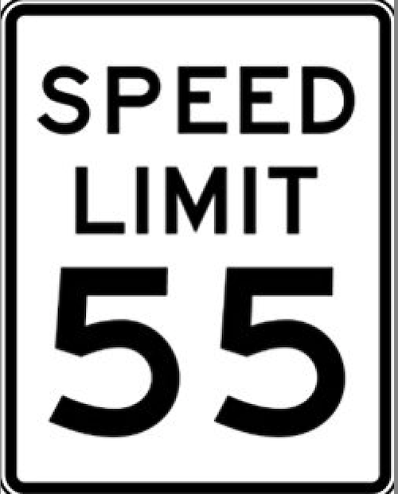

1.00 Laws and Theories
Author: Chip Brock · Published: May 14, 2025

1 Turtles: Theories and Laws
Here’s an oft-told story about turtles as the bedrock on which the universe is built. It’s a story with legs: in arguing his plurality opinion in Rapanos v. United States (a dispute over wetlands and the scope of the Clean Water Act, the jurisdiction of the Army Corps of Engineers, and Environmental Protection Agency), Justice Antony Scalia criticized Justice Kennedy’s argument in a footnote:
Turtles
“…an Eastern guru affirms that the earth is supported on the back of a tiger. When asked what supports the tiger, he says it stands upon an elephant; and when asked what supports the elephant he says it is a giant turtle. When asked, finally, what supports the giant turtle, he is briefly taken aback, but quickly replies,”Ah, after that it is turtles all the way down.”1
The turtle story in all of its manifestations is an allegory for infinite regress. Scalia was arguing that there seemed to be no end to regulations.
1.1 Laws?
In the 1970s there was an unpopular national speed limit of 55 mph and the catch-phrase used to encourage compliance was: ‘It’s not just a good idea, it’s the law.’ That’s one interpretation of a law – you can obey or choose not to. But then there is the common expectation for Scientific Laws…certain, indisputable, irrefutable statements. Epic in their cosmic importance.
The popular notion of a Scientific Law is a statement that’s impossible to dispute: once it’s discovered, it’s almost biblical in its permanence. Once you’ve found a Law, man, you’re done. That’s it. That Law is way better than a theory. Go do something else.
This “Law” was incorporated into the description of physics following Isaac Newton’s almost super-human successes. Surely, he’d uncovered the God-given Laws of Nature and surely uncovering the Laws of Nature is now the goal of science. You’ll see all manner of “Laws” that follow Newton’s three Laws of Motion and Newton’s Gravitational Law: Snell’s Law, The First and Second Laws of Thermodynamics, the Law of Reflection, Faraday’s Law, Ampere’s Law…and so on, up to the 20th century when we got serious.
From that point, it’s Einstein’s Special Theory of Relativity, Einstein’s General Theory of Relativity, Quantum Theory, Ginzburg–Landau Theory, Bardeen-Cooper-Schrieffer Theory, Relativistic Quantum Field Theory, Inflation Theory, the Big Bang Theory, and so on. Are we just dumber than when all of science was uncovering Laws? No. Rather, around the turn of the 20th century the subtlety of science is was sinking in. But apparently not in Florida. onlytheory
Let me tell you a story.
The speed of light
We’ll spend a lot of effort becoming comfortable with Einstein’s Theory of Relativity. One of its famous, bedrock rules is that the speed of light is the fastest that anything can travel. (BTW, that’s technically a “postulate,” not a law.) Relativity has been confirmed so many times that we use it as a tool and not a theory to be tested…Florida should call it the Law of Relativity. But we don’t. It’s the Theory of Relativity.
There is an elementary particle called the neutrino that is so light that it travels at almost the speed of light. In 2011 an experiment called Opera in a mountain in northern Italy was under way to measure properties of neutrinos coming from the CERN particle accelerator in Geneva, Switzerland, almost 1000 km away.
In order to be sure of the source of interactions, Opera had a sophisticated GPS system that measured times in Geneva and times in the mountain at a precision better than ±0.000000010 seconds (±10 nanoseconds). What they found was that the neutrinos appeared to arrive faster than the speed of light would allow, apparently violating the Theory of Relativity!
If Relativity were a Law of Nature in the Florida-way, say the “Law of Relativity”—then the surprising Opera measurement would have confronted the authority of the Law of Relativity and the scientists would back down: can’t cross that threshold of Law. But Opera scientists couldn’t do that. The experimenters worked very hard to redo their analyses and scoured their experimental apparatus for any place that the few nanoseconds might have been missing.
I was a member of the Physics Advisory Committee at the Fermi National Laboratory in Batavia, Illinois which was running a similar experiment, shooting neutrinos from Illinois to a mine in northern Minnesota. We asked them and learned that they too saw an effect, but they used a conventional GPS and they couldn’t measure times precisely enough to test Opera… so we bought them a fancy – expensive – GPS system so they could check! Meanwhile many alternative explanations around Relativity were proposed to account for the measurement. Many, many. A small theoretical physics industry of alternative ideas.
After a year or so, Opera discovered a subtle, tiny, but flawed optical fiber seating that accounted for the missing few nanoseconds and then were able to conclude that Einstein could rest easy. Meanwhile, Fermilab had a shiny, new GPS system.
You get the important part of this story? Relativity is among the most trusted theories in all of science — if anything could be labeled as “Law” then this is it! And yet, when faced with an apparent problem, we had to dig deeper.2
I was proud of my community during that episode. That’s how it’s supposed to work. There are no Laws of the capital L kind.
1.2 My criterion for a proper scientific statement
I’m treading into waters that force us to think about what is and what isn’t a proper scientific process. Historically. that’s the problem of demarcating Scientific Knowledge from “pseudo-science” statements. You may have heard that scientific statements must be “falsifiable,” an idea often credited to the philosopher of science (and other things), Karl Popper3
Here’s my personal rule:
Nobody said, “Let’s ignore this evidence because Relativity must be true.” We all said, “Wow. A faster-than-light neutrino signal is probably a mistake but we’d better spend a year around the world checking it.”
👍 Proponents of scientific statements can always tell you what evidence would force them to abandon one of their favorite theories, here, a superluminal particle qualifies as one of those pieces of evidence that could in-principle have overthrown Relativity.
👎 Proponents of unscientific statements cannot – or will not – do that. The most obvious contemporary example of unscientific assertions are those that come from creationism or “intelligent design.” Unlike the Opera experience, proponents of these systems of belief hold that some parts of their knowledge live in territory that is off-limits for questioning.
Wait. Why shouldn’t students be taught both sides of such a disagreement about our origins?
Glad you asked. That’s now called “teach the controversy“ and it’s not appropriate in a science class for two reasons. First, to put creationism in a science class goes against that crucial falsifiability requirement. So it’s not science. Second, science is not a democracy. There’s no requirement in how the universe works that it make people happy. It is what it is.
If you believe that “X” cannot be doubted? Then X may be some form of knowledge, but it’s not scientific knowledge.
Wait. What about Newtonian Gravitation! It’s used today even to determine satellite and spacecraft trajectories.
Glad you asked. A tiny bit of display math can answer that I hope
Here is Newton’s Gravitational law (see what I did there? law not Law):
\[F = G\frac{M_1M_2}{R_{12}}\]
In words, this formula says that the force of gravitational attraction between two objects that have masses of \(M_1\) and \(M_2\) and whose centers are separated by the distance \(R_{12}\) is that relationship. Let’s look at each piece:
- \(G\) is called the gravitational constant (or Newton’s constant). It’s very hard to measure and as a resut it’s the worst measured constant of nature of all. A question of scientific research today.
- \(M\) is the mass…which is a very complicated concept. As we speake, we are at work at CERN in Geneva, Switzerland trying to understand mass. A question of scientific research today.
- \(R^2\) …that “2” in the formula is a direct consequence of the presumption that we have three dimensions of space. It’s a measurable quantity – and is not very precisely determined and the notion that we have three and not more spacial dimensions is a question of scientific research today.
So every term in Newton’s Gravatation law is uncertain and theoretically of interest. Again, Laws shouldn’t do that.
Wait. So, what can you believe in?
Glad you asked. That’s an understandable concern for folks who don’t do science for a living. We have theories and they are all questionable. We must live in a world that is full of uncertainty and a scientific world where no idea is permanent. I suspect that’s uncomfortable for many but it’s our lives.
So “theories all the way down” really means that we have a few theories that we trust very well and we don’t question them now unless a surprise happens. And we have many theories that are not trusted as much. So not turtles all the way down, but theories of varying degrees of trustworthiness.
Footnotes
This turtle story is also credited to Bertrand Russell, Carl Sagan, Linus Pauling, and many other scientists…and apparently justices.↩︎
That’s not to say that there weren’t a number of physicists who pooh-pooh’d it as a waste of time.↩︎
Popper’s strict falsifiability is no longer accepted for nuanced reasons (the “Quine-Duhem Thesis”) but the sentiment is still a guide and Einstein underscored this in his 1905 Special Relativity paper.↩︎